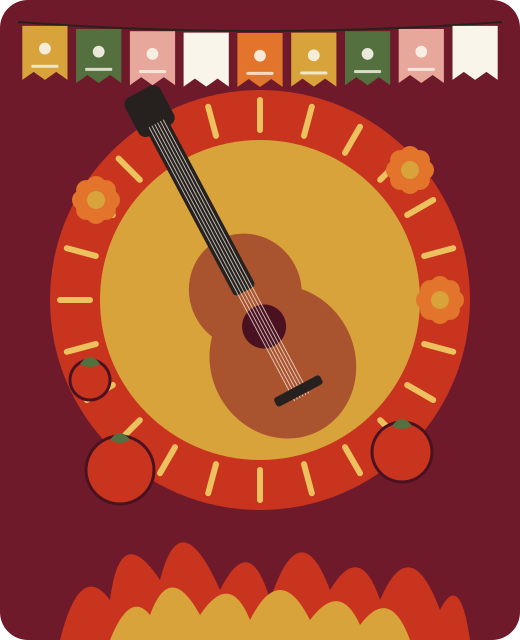

Select a festival from the list to see its details here.
Cultura · Gastronomía · Música
Fiesta Viva
Discover the Spirit of Spanish Festivals
Tradición, sabor y ritmo.
Tradition, flavour and rhythm.
A fiesta is never just a party. Each one carries a town's history, its favourite dishes, its music and the people who keep it alive year after year. Explore four famous celebrations — three from Spain and one from Mexico — and test your Spanish along the way.

Las fiestas · The festivals
Four celebrations, four stories
La Tomatina, Las Fallas and San Fermín are Spanish festivals. Día de los Muertos is a Mexican tradition: it belongs to the wider Spanish-speaking (Hispanic) world, not to Spain. Each card shows where and when the festival happens; select Learn more for its history, traditions, food and music.
Festival cards need JavaScript to display.
Sabores de fiesta · Festival flavours
Food is how a celebration is shared
Long tables, big pans and street stalls turn a festival into a meal for the whole neighbourhood. Some dishes below are documented festival foods; others are everyday Spanish cuisine that simply appears at many gatherings. Each card is labelled so the difference stays clear.
- Festival food documented link to a specific festival
- Regional dish typical of one region, eaten all year
- Everyday general Spanish food culture
El ritmo de la fiesta · The rhythm of the festival
Music and dance: everyone takes part
Rhythm, costume and collective participation turn a crowd into a community. Spain's festival soundscape is varied: flamenco is strongly Andalusian, while Valencia marches to brass bands, Aragón dances the jota and Pamplona follows its pipers and street bands.
Interactive media · el compás
Hear a 12-beat flamenco cycle
Styles such as soleá count twelve beats, with accents on 3, 6, 8, 10 and 12. Press play and try clapping (palmas) on the highlighted accents. The sound is synthesised in your browser — it is a counting aid, not a recording of a performance.
Explorador de fiestas · Festival explorer
Filter, explore and compare
Seven celebrations from Spain, Mexico and Colombia. Filter by country, region and theme, pick a festival to see its details, or compare two side by side. All information comes from the same research shown above.
When do they happen? (el calendario)
Shaded months show when each festival usually takes place. Dates for La Tomatina, the Feria de Abril and the Carnaval move each year.
Compare two festivals (comparar)
Spanish quiz · desafío
¡Pon a prueba tu español!
Put your Spanish to the test: festivals, food, music and vocabulary.
How it works
- 20 multiple-choice questions, shuffled for every attempt.
- Four options each — only one is correct.
- After each answer you will see the correct option and a short explanation.
- Keyboard: Tab to move, Enter to choose, or press 1–4.
Your results · Resultados
Vocabulary · vocabulario
Palabras para celebrar Words to celebrate with
Search in Spanish or English, filter by topic, and switch to flashcards to test your memory.
Nuestro equipo · Our team
Five students, five contributions
Select a team member to see what they researched, their original text, a Spanish vocabulary check for their section and an explanation of the code they own.
Honesty note: the reflection paragraphs are drafts. Text in [square brackets] marks
places where each student must add their own thoughts. Every student should personalise their reflection in
js/data.js before submission. None of us claims to have attended these festivals.